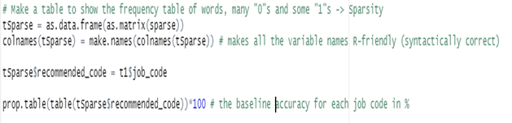
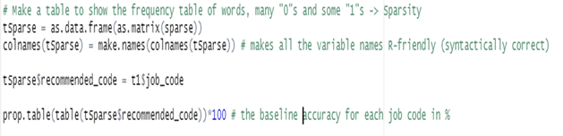

Data Exploration
Summary Statistics for the Dataset
The table was made to show how Frequently appeared words in each job ab
Job Classification Model
The random forest algorithm is an extension of the bagging method as it utilizes both bagging and feature randomness to create an uncorrelated forest of decision trees. Feature randomness generates a random subset of features, which ensures low correlation among decision trees. This is a key difference between decision trees and random forests. While decision trees consider all the possible feature splits, random forests only select a subset of those features.
Data Exploration
Summary Statistics for the Dataset
The table was made to show how Frequently appeared words in each job ab
